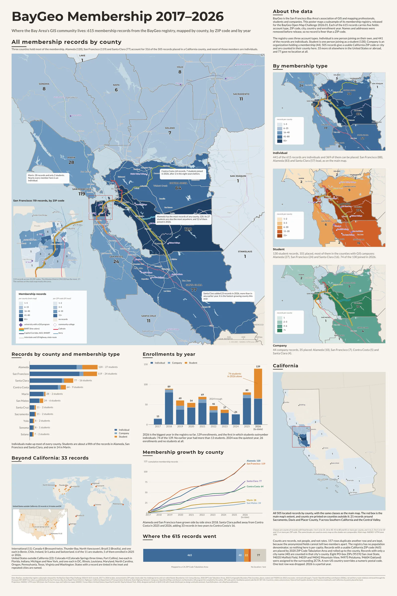

Interactive map · BayGeo membership registry · QGIS, MapLibre GL, deck.gl · 2026
BayGeo Membership, 2017–2026
Where the Bay Area’s GIS community lives: 615 anonymized membership records from the BayGeo registry, mapped by county, by ZIP code and year by year. Three counties hold most of the membership, most members are individuals, and 2026 is the year the students arrived.
The poster
The same data as a 24 by 36 inch print: the county map with a San Francisco ZIP-code inset, the three membership types side by side, enrollments by year, growth by county and where all 615 records went. Built in QGIS from the same GeoPackage and the same class breaks as this page. Download the poster as a PDF (vector, 10 MB).

About the data
BayGeo is the San Francisco Bay Area’s association of GIS and mapping professionals, students and companies. This map uses a subsample of its membership registry, released for the BayGeo Open Map Challenge 2026.01. Each of the 615 records carries five fields: account type, ZIP code, city, country and enrollment year. Names and addresses were removed before release, so no record is finer than a ZIP code.
The registry uses three account types. Individual is one person joining on their own, and 441 of the records are individuals. Student is one person joining as a student (130). Company is an organization holding a membership (44). 505 records give a usable California ZIP code or city and are counted in their county here. 33 more sit elsewhere in the United States or abroad, and 77 gave no location at all.
What the map shows
Three counties hold most of the membership. Alameda (120), San Francisco (119) and Santa Clara (77) account for 316 of the 505 records placed in a California county, and most of those members are individuals. Marin is the most professional county, 28 records and only 2 students.
2026 is the biggest year in the registry so far, 139 enrollments, and the first in which students outnumber individuals: 74 of the 139. No earlier year had more than 13 students. The students gather where the GIS campuses are: Alameda (27), San Francisco (24) and Santa Clara (16).
Santa Clara and Contra Costa are growing fastest. Santa Clara added 23 records in 2026, more than in any earlier year, and Contra Costa added 12, seven of them students, after only two students in the eight years before. 2024 was the quietest year, 26 enrollments and no students at all. The registry does not say why.
How to read it
Counties are shaded by the number of BayGeo membership records with an address there. The classes are fixed counts (1–5, 6–15, 16–40, 41–80, 81+ for all members, with narrower breaks for students and companies) and are the same on every view and on the poster, so shades are comparable. Zoom in and the counties give way to ZIP Code Tabulation Areas with their own classes (1–2, 3–5, 6–10, 11+), which is where San Francisco’s 119 records resolve into 23 ZIP codes. The year slider recounts everything: membership through the year accumulates enrollments from 2017, and new that year shows one year’s enrollments alone. Press play to watch the membership build.
A registry has no population denominator, so nothing here is per capita. Counts are shown as counts.
Cleaning and interpretation
Every record was given a location tier and a note, and nothing was dropped silently. Whitespace was trimmed before any rule ran (8 rows), and ZIP+4 codes were truncated (6). 946088 Oakland was read as 94608. A non-US country overrides a numeric postal code (51044 Sri Lanka, 7500000 Chile, two Brazilian codes), and 8700 Kuesnacht is a Swiss postal code even with the country blank. 48230 with city Milpitas is a Michigan ZIP against a California city, so the city was trusted and the record is city-only, and the same goes for 7142 Concord. 79059 Miami is Miami, Texas, a valid ZIP with the state inferred from the code because there is no state field. One row reading Test was excluded.
Every ZIP in the California range was checked against the 2020 ZCTA file. Eight records use PO-box or single-site ZIPs that are not ZCTAs (95192 San José State, 94035 Moffett Field, 94039 and 94042 Mountain View, 94975 Petaluma, 94604 Oakland); each was assigned to the ZCTA containing the ZIP’s postal point from GeoNames (OpenStreetMap for 94035) and flagged. Records that gave a California city but no usable ZIP are counted in that city’s county and never in a ZIP code.
| Tier | Rule | Records | Shown as |
|---|---|---|---|
| A | California ZIP joining a 2020 ZCTA | 465 | County shading and ZIP detail |
| B | California city only (ZIP missing, invalid or conflicting) | 40 | County shading only |
| C | Valid US ZIP outside California | 22 | Orange markers, zoom out to see them |
| D | International, by country or postal code | 11 | Orange markers, zoom out to see them |
| E | No ZIP and no city (76), or the test record (1) | 77 | Counted in the bar, not mappable |
Sources and credits
- BayGeo. Membership registry subsample released for the BayGeo Open Map Challenge 2026.01. 615 records, 2017 to 2026 (to date), anonymized to ZIP code. Used under the challenge terms and not redistributed. Only aggregates are published here.
- U.S. Census Bureau. 2020 ZIP Code Tabulation Areas, 2022 Cartographic Boundary Files (counties, places, states) and TIGER/Line 2022 area water, retrieved with pygris.
- OpenStreetMap contributors (ODbL). Rail and ferry route relations for BART, Caltrain, Capitol Corridor, ACE, SMART, VTA and the ferries, retrieved through the Overpass API; campus locations through Nominatim. The list of GIS programs was compiled by hand. BART line colors as published by the San Francisco Bay Area Rapid Transit District.
- California Department of Transportation (Caltrans). State Highway Network.
- GeoNames. United States postal code file (CC BY 4.0), used to place PO-box ZIPs in a ZCTA.
- Natural Earth. Countries, states and provinces (public domain).
- Basemap tiles © CARTO, © OpenStreetMap contributors. Map libraries: MapLibre GL, deck.gl and Plotly.